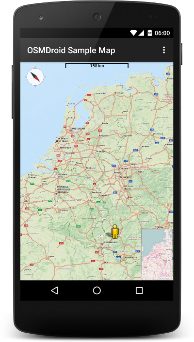
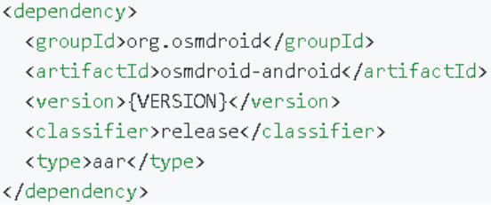
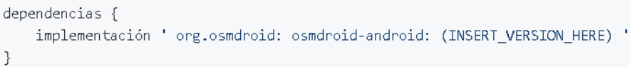
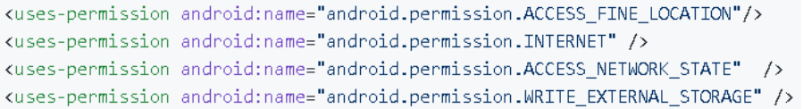
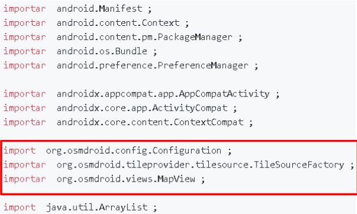
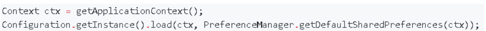
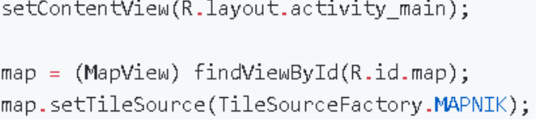
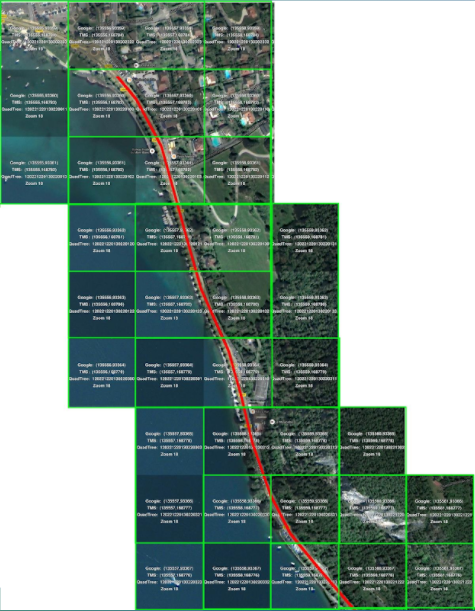

OsmDroid
11 de Enero de 2021
Qué es OsmDroid?
Cómo usar la biblioteca osmdroid?

Cómo incluir OsmDroid en un proyecto de Maven para Android
osmdroid-android (motor de mapas)
Cómo agregar la biblioteca osmdroid a través de Gradle
osmdroid-android (motor de mapas)

Cómo usar la biblioteca osmdroid

Cómo usar la biblioteca osmdroid

Cómo usar la biblioteca osmdroid
cargar / inicializar la configuración de osmdroid


inflar y crear el mapa
Administrador de caché
WPCacheManager se fusionó con CacheManager en osmdroid-android.
Si solo necesita un mapa fuera de líne, porque WPCacheManager descarga mosaicos adyacentes

Soporte WMS
Requisitos generales del servidor WMS
osmdroid thirdparty
Esta biblioteca proporciona las siguientes características como complemento para osmdroild